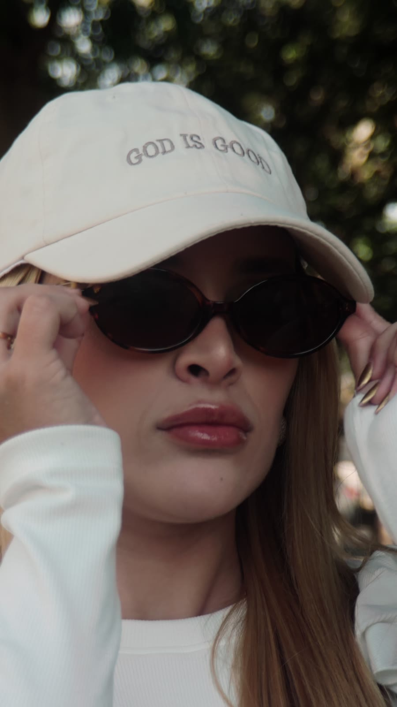
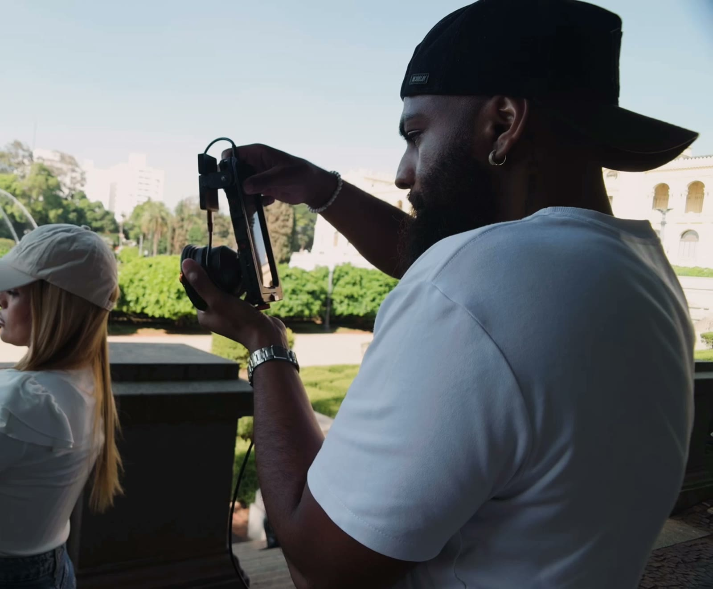
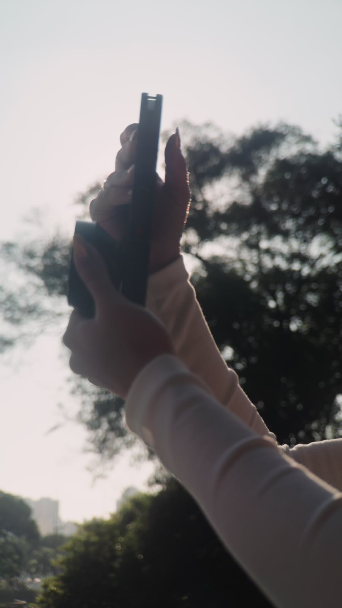
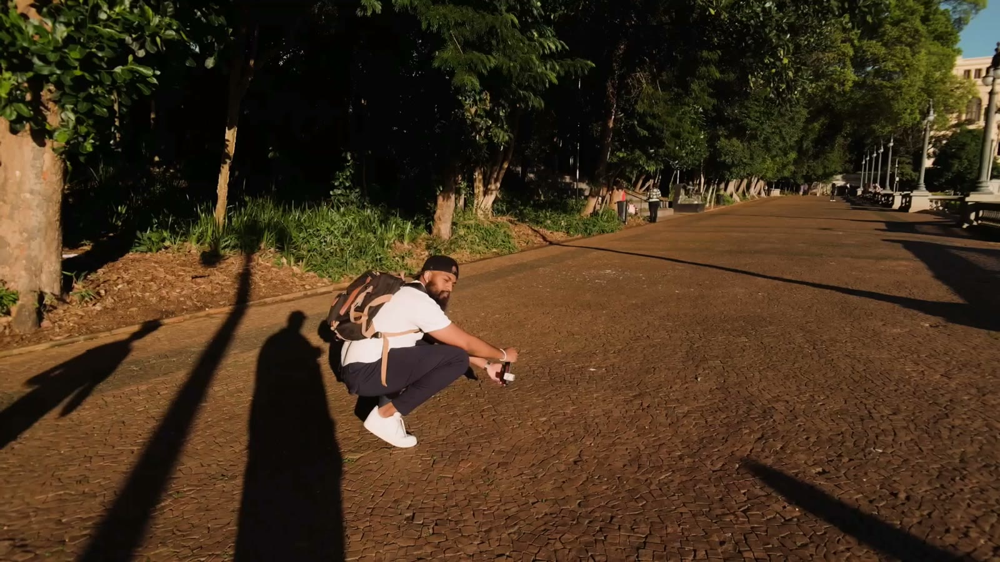
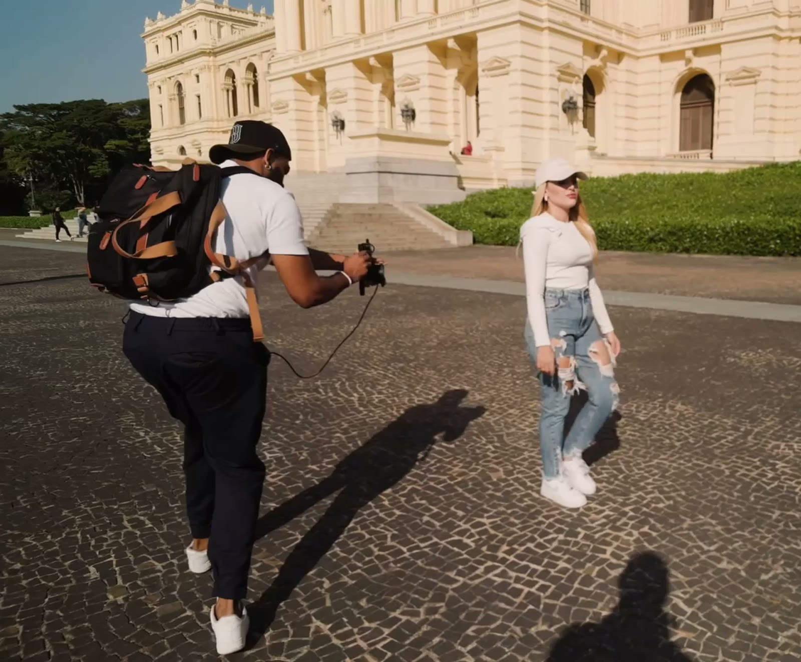
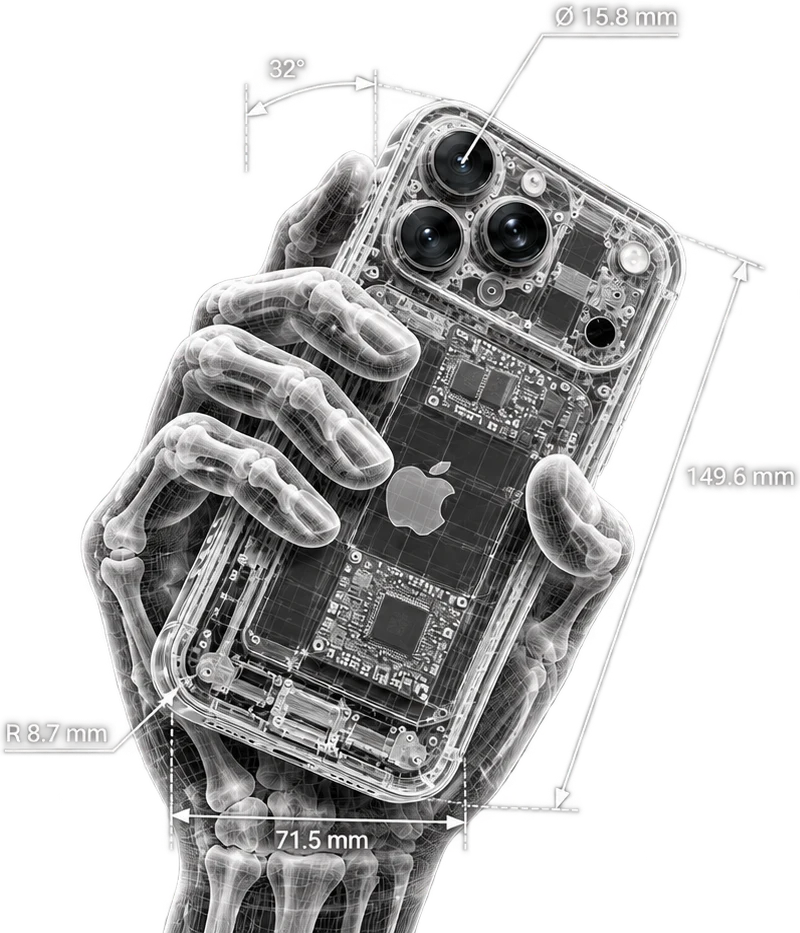
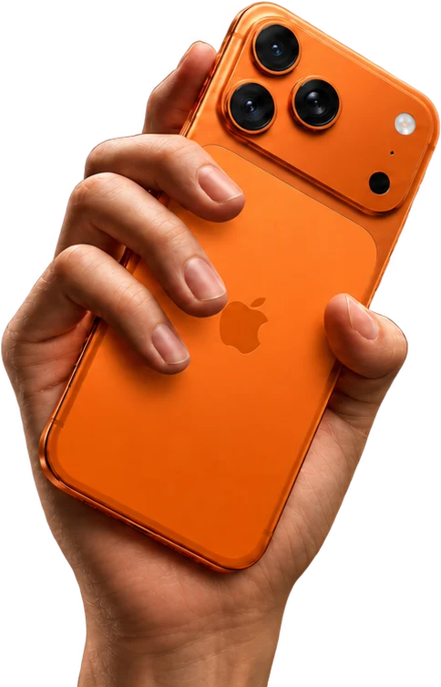
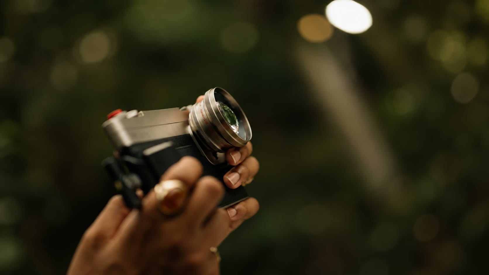

TVF ProRes — Curso de gravação em
ProRes no celular
É a decisão antes do REC: a luz que você escolhe, o codec que você grava, a lente, o enquadramento e a postura de quem sabe o que está entregando.



ProRes não salva luz ruim.


Luz boa é luz bem posicionada.

O profissional impressiona com o controle.



o métododo REC ao cliente
9 módulos, mais de 40 aulas, gravados em 4K. Passe o mouse em cada um para ver as aulas.
- Decisões antes do REC
- Quem grava vídeo × videomaker
- Por que o Blackmagic importa
- O mapa do Blackmagic
- Configuração base profissional
- Ajustar em qualquer ambiente
- Erros que acabam com a imagem
- O setup real de trabalho
- Lente é linguagem
- Gimbal ou mão livre
- Imagem premium começa antes do app
- Manual × automático
- Ler a luz
- Imagem premium em camadas de luz
- 10 erros que denunciam amadorismo
- Aula prática na rua
- Blackmagic configurado na prática
- Captação 1: vídeo fashion
- Captação 2: depoimento
- Captação 3: atleta em movimento
- A mentalidade do editor
- Decupagem e emenda de músicas
- Efeitos sonoros
- Correção de cor no CapCut
- Da trilha ao fechamento (4 aulas)
- Edição no celular, direto do SSD
- LUT não é filtro mágico
- Aula guia na prática
- Fluxo de trabalho com LUT
- Erros de LUT e cor
- Identidade artística
- Como começar mesmo sem nome
- Clientes toda semana
- Script de venda que fecha
- Meu método real de crescimento
- Por que bons profissionais continuam invisíveis
- Instagram que passa valor
- Portfólio que fecha cliente
Blackmagicna prática.
quem ensina.
Três pessoas que vivem de vídeo e gravaram o curso inteiro no celular.
na voz dos alunos.
Sinto que minha entrega evoluiu muito. Passei a ter mais segurança, mais intenção em cada escolha e a enxergar meu trabalho de uma forma muito mais profissional. E isso também refletiu nas oportunidades que surgiram, nos novos contratos que fechei e na confiança que tenho construído com meus clientes.
O suporte de vocês é algo surreal e que faz toda a diferença. Às vezes são 00h e lá estou eu chamando eles para me socorrerem com alguma dúvida.
Eu me lembro do primeiro dia em que abri o Blackmagic e vi tudo aquilo azul, hahaha! E pensar em como, através das aulas, dos ensinamentos e de toda a jornada, fui evoluindo até chegar ao lugar em que estou hoje.
Hoje tenho segurança na minha entrega, no meu olhar e na profissional que me tornei.
mensagens enviadas no grupo da comunidade TVF
TVFProRes
perguntasfrequentes
01Para quem é o TVF ProRes?+
Para criadores de conteúdo, videomakers e profissionais do audiovisual que querem elevar a qualidade das produções e se posicionar num mercado cada vez mais competitivo. Serve para quem está começando com intenção séria e para quem já trabalha e quer padronizar e cobrar mais.
02Preciso de uma câmera profissional?+
Não. O curso é feito para o celular, com o app Blackmagic Camera. Para gravar em ProRes o iPhone precisa ser modelo Pro; se o seu ainda não for, a configuração, a luz, a captação e o posicionamento continuam valendo para qualquer setup.
03É só para casamento?+
Não. Os exemplos vão de vídeo fashion a depoimento e atleta em movimento. O que você aprende é decisão de imagem, e isso vale para qualquer nicho.
04Por quanto tempo terei acesso?+
O acesso é de 1 ano a partir da compra, com todas as aulas, materiais, LUTs e as atualizações do programa nesse período.
05Posso parcelar?+
Sim. São R$ 997 à vista ou 12x de R$ 103,11, direto no checkout da Kiwify.
06E se eu não gostar?+
Você tem 7 dias de garantia pela Kiwify. Se não for para você, pede o reembolso dentro desse prazo.